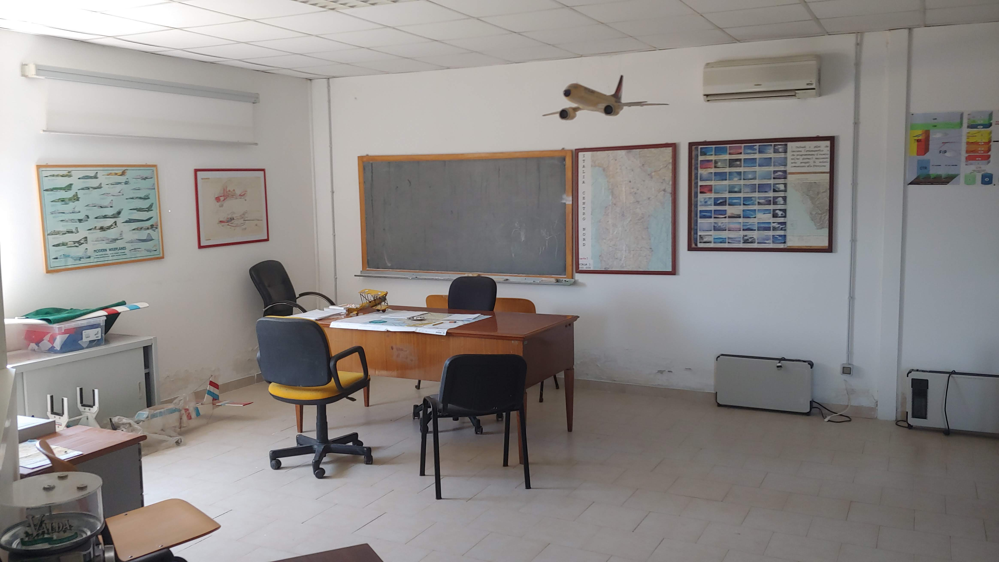
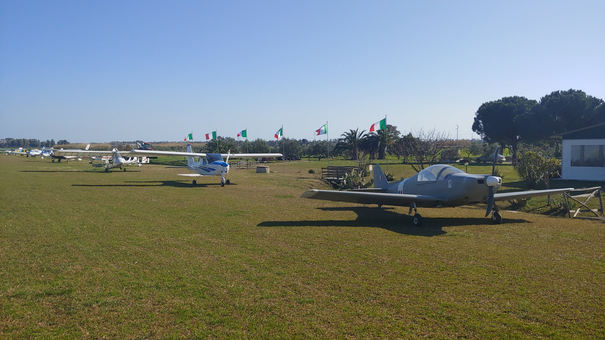
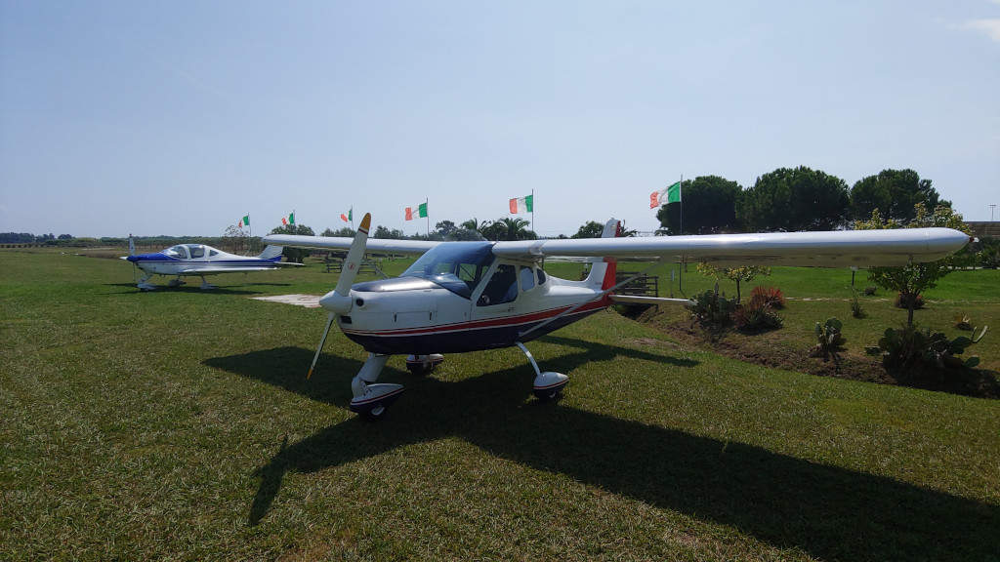

I corsi per il conseguimento dell'attestato di pilota VDS, su aereo ed elicottero, si svolgono presso
l'Aviosuperficie tutti i giorni, per la parte teorica in aula e per la parte pratica su prenotazione con il
coordinatore della Scuola di Volo. Gli apparecchi utilizzati sono:
EuroFly Fire Fox, noto velivolo tubi e tela che grazie alle sue doti di semplicità di volo sicurezza ha contribuito alla nascita del volo ultraleggero in Italia.
Tecnam P92 Echo Super e P96 Golf, ormai conosciutissimi sia per le caratteristiche di semplicità di pilotaggio, affidabilità e sicurezza quanto per le ottime prestazioni in termini di velocità di crociera e autonomia. Particolarità che hanno reso questa "famiglia" di velivoli i più noti addestratori leggeri ed ultraleggeri.
Per l'Elicottero VDS Terrestre utilizziamo lo YOYO serie I della AeroEliServizi.
EuroFly Fire Fox, noto velivolo tubi e tela che grazie alle sue doti di semplicità di volo sicurezza ha contribuito alla nascita del volo ultraleggero in Italia.
Tecnam P92 Echo Super e P96 Golf, ormai conosciutissimi sia per le caratteristiche di semplicità di pilotaggio, affidabilità e sicurezza quanto per le ottime prestazioni in termini di velocità di crociera e autonomia. Particolarità che hanno reso questa "famiglia" di velivoli i più noti addestratori leggeri ed ultraleggeri.
Per l'Elicottero VDS Terrestre utilizziamo lo YOYO serie I della AeroEliServizi.
Per conseguire l'attestato VDS e necessario presentare:

- un documento valido;
- la visita medica come prevista dal DPR 133/2010;
- nulla osta della Autorità provinciale di pubblica sicurezza.
